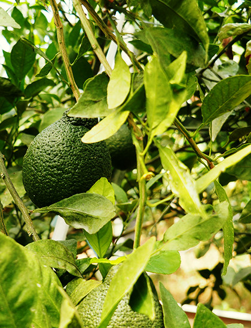

ハーブの専門店 “Makrood”
Makrood
Herbal Shop Makrood
当社は鹿児島に設立された新しい会社で、南九州の温暖な気候を生かし、地元食材とエスニック食材の融合をコンセプトに食品・商品の開発を行うことを目的としています。 第一弾の商品としては熊本・南阿蘇産のレモングラスを使用したブレンド・ハーブテｲーを作りました。
社名のMakrood（マックルー）はタイ語でコブミカンという東南アジア原産の柑橘類で、その葉と果実が料理の香りづけや化粧品として利用されています。 このコブミカン（マックルー）が新たな鹿児島の特産品となることを目指して社名としました。
